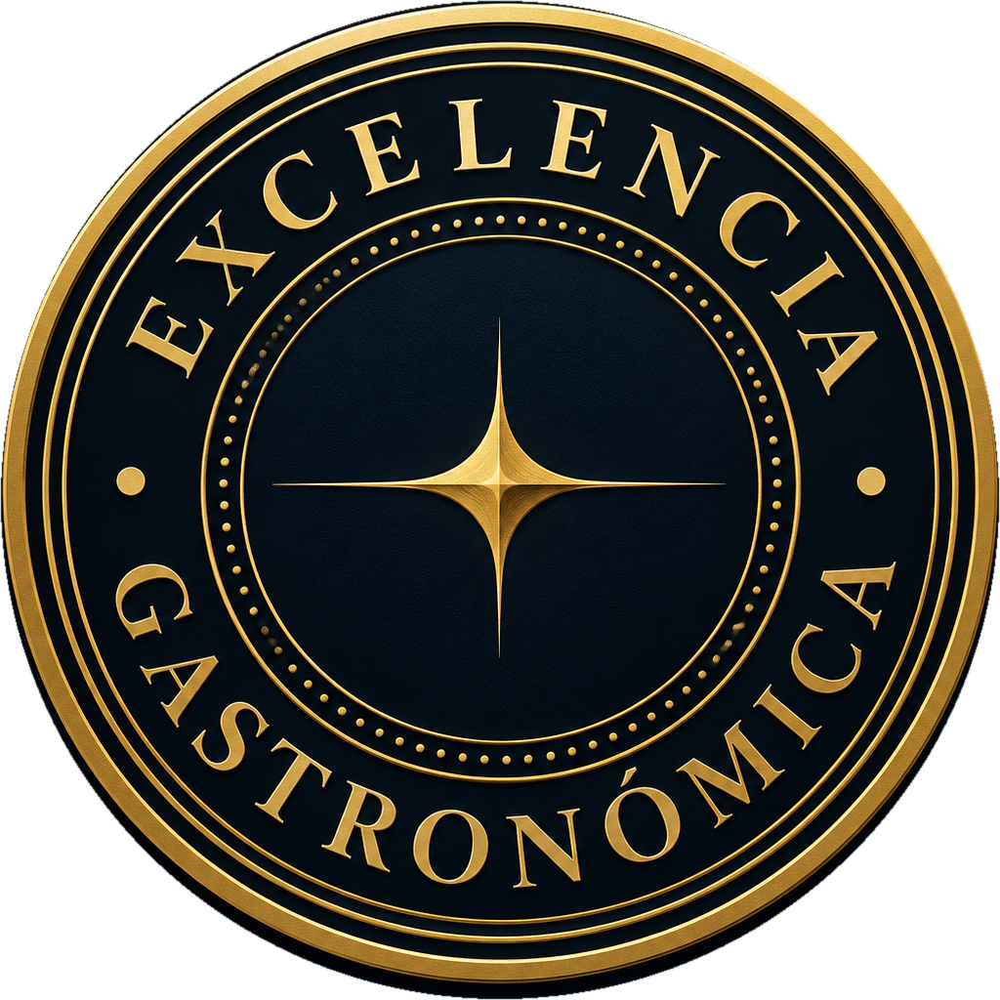
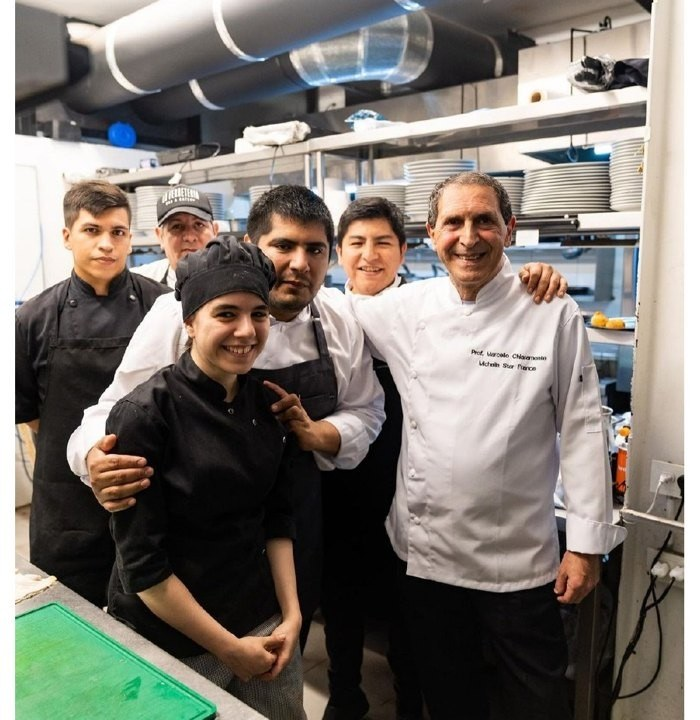
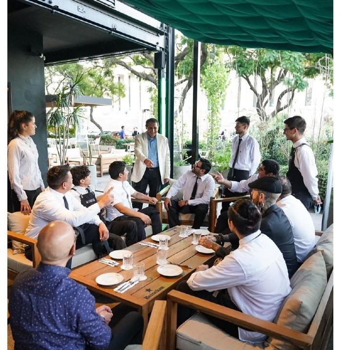

Distinción visible
Reconocimientos que ayudan a comunicar el nivel alcanzado.
TENEDORES · COPAS · CERTIFICACIÓN PROFESIONAL
Certificaciones gastronómicas privadas para establecimientos y profesionales, con evaluación, formación y una red de representación comercial en América.

Cuatro formas de comprender nuestro sistema.
La calidad de una experiencia gastronómica está en cada detalle: la cocina, el servicio, la dirección y las personas que hacen todo posible.
GL&AS y Chiaramonte presentan una propuesta de certificación privada y asesoramiento técnico diseñada para reconocer trayectorias profesionales, evaluar establecimientos y acompañar la mejora continua.
Conocer nuestras soluciones ↗Reconocimientos que ayudan a comunicar el nivel alcanzado.
Evaluación de operaciones, servicio, experiencia y trayectoria.
Capacitación y asesoría para acompañar el crecimiento.
UNA FORMACIÓN CON RAÍCES EUROPEAS
Una trayectoria construida entre escuelas gastronómicas europeas y la dirección de cocinas y equipos de alta exigencia.
Su trayectoria reúne formación especializada en Italia, Francia, Alemania y República Checa. Esa experiencia se proyecta en consultoría, capacitación y evaluación gastronómica privada en América Latina.
Conocer la trayectoria del chefUna experiencia internacional aplicada a cocina, sala, operaciones y formación profesional.
Una propuesta que combina evaluación de estándares, visibilidad de la distinción y formación para acompañar la mejora del sector gastronómico.
Una insignia para comunicar la categoría obtenida en el establecimiento y sus canales.
Una presentación de calidad más clara ante clientes, equipos y aliados comerciales.
Evaluación técnica de cocina, atención, instalaciones y dirección operativa.
Criterios compartidos y reconocimiento a la trayectoria de los profesionales.
Orientación y programas de mejora para elevar los estándares del negocio.
Documentación privada de experiencia y funciones, sujeta a revisión técnica.
Dos propuestas con un mismo propósito: poner en valor los estándares y la experiencia gastronómica.
Evaluación presencial de cocina, sala, servicio, operación y experiencia. Distinciones privadas de 1 a 5 tenedores o copas según la categoría alcanzada.
Consultar evaluación ↗Reconocimiento de la trayectoria y competencias para chefs, pasteleros, camareros, jefes de sala, directores e instructores.
Solicitar información ↗La evaluación se realiza en el lugar y considera instalaciones, protocolos, servicio y la operación real del establecimiento.
Una certificación privada orientada a reconocer antecedentes, experiencia y responsabilidades de profesionales gastronómicos.
Un recorrido orientativo. Los pasos concretos dependen del tipo de certificación y de las condiciones de cada solicitud.
Se define el tipo de certificación y los antecedentes o establecimiento a evaluar.
Se revisa documentación o se realiza una visita técnica, según el servicio.
Se analizan los resultados y el nivel que corresponde conforme a los criterios aplicables.
De aprobarse, se emite la certificación privada y los materiales asociados.
EL CHEF QUE FIRMA SU CERTIFICACIÓN
Prof. Mestre Chef Marcello Chiaramonte
Maestro Consultor Internacional de Alta Culinaria · Estrella Michelin Francia
Dirigiendo cocinas de hoteles y restaurantes de 4 y 5 estrellas en París, Roma, Madrid, Londres, Ámsterdam, Estocolmo, Múnich y Sicilia.
Institut Paul Bocuse de Lyon e institutos de Florencia, Bolonia y Cosenza.
Estrella Michelin Francia, Premio Ruedas de Oro de la Federación Italiana de Cocina y Fascia Rossa Auguste Escoffier.
Profesor Oficial y Honorario del Instituto Estatal IPSSAR «Paolo Borsellino» de Palermo.
TRAYECTORIA PROFESIONAL
Un recorrido desde sus comienzos en Italia hasta la docencia, la consultoría y las auditorías de calidad gastronómica.
Programas a medida para elevar estándares de servicio, cocina y gestión. Talleres, seminarios, acompañamiento continuo y masterclasses según disponibilidad.
Diagnóstico operativo, planes de acción y seguimiento.
Hospitalidad, comunicación y manejo de consultas.
Protocolo, servicio y coctelería.
Técnicas, recetas y presentación gastronómica.
Manipulación de alimentos y buenas prácticas.
Organización, motivación y formación de mandos medios.
Perfiles, entrevistas e incorporación.
Procedimientos, fichas y protocolos de operación.
Auditorías, desempeño y cliente incógnito.

Auditoría integral de cocina, sala, sanitarios y dirección, con categorización privada de cinco tenedores.

Evaluación técnica y capacitación del equipo de servicio y dirección de sala.
Explorá la red de representantes por región. Seleccioná un punto y consultá sus datos de contacto desde el mapa o el listado.
Quiero representar en mi país ↗Conocé las dos modalidades de colaboración comercial descritas en la propuesta de representación.
Presentá los servicios a profesionales, restaurantes, hoteles y escuelas de tu zona. Desarrollá relaciones comerciales locales.
Quiero representar mi ciudadConstruí y coordiná una red de representantes. Impulsá alianzas y oportunidades comerciales a escala nacional.
Consultar representación nacionalContanos qué querés certificar o en qué territorio te interesa representar el proyecto. Nuestro equipo podrá orientarte sobre los pasos siguientes.